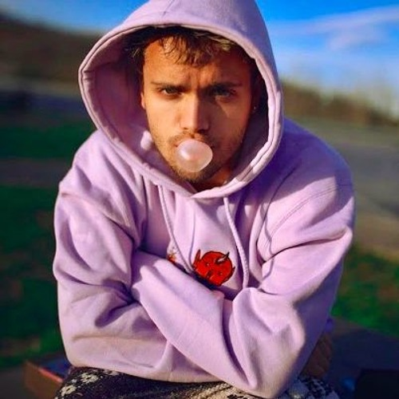
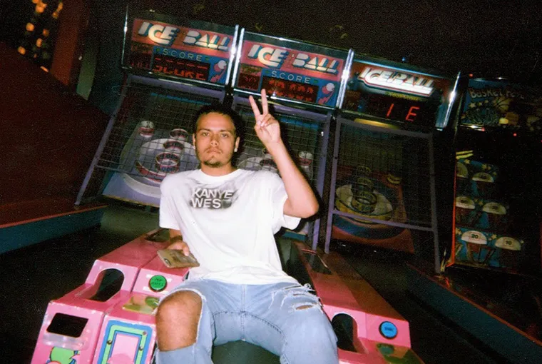

6 Dogs
- Published Oct. 11, 2024
6 Dogs is a rapper from Atlanta, Georgia, who blew up in the soundcloud era through songs like Faygo Dreams and Flossing which were released in his self-titled album.
In January, 2021, at just 21 years old, Chase died by falling from a building — nobody knows if it was suicide or a consequence of psychosis. While he was alive, Chase expressed his mental health struggles — namely bipolar disorder and drug abuse — through his music and art, which attracted a loyal community of listeners who are dedicated to preserving his legacy.
In this post, I am hoping to give you a taste of his music and share my perspective about it, and what makes it so special to me.
My Story
I discovered Chase's music in 2021, after he passed and after RONALD, his posthumous album, was released. I was returning to high school in-person after a year of fully remote school, and his music helped me cope with my loneliness and find a supportive community to be a part of. I spent a lot of my time playing video games, alone, so I spent hours playing Chase's music on repeat as I played.
His music is special to me because it fluidly adapts to my emotions and gives me the space engage with it in any way I want to. In an interview with Daniel Hartzog, the producer of RONALD and several singles, Chase clearly articulates this aspect of his music.
"I want people to turn up with other people, but also be able to listen to this shit and just diffuse, have some alone time, and introspect."
I think that the emotional flexibility of his music also makes me associate the style of each album or song with different pieces of my life.
Favorite Songs
Now, I want to share some of my favorite songs with you that showcase Chase's unique talent and creativity. For each of them, I included a 20 second clip to give you a taste the song.
-
Burberry Weather — Released April 1, 2020 (Single)
Burberry Weather is my favorite song — from any artist. Produced by Daniel Hartzog, the beat feels dreamy and uplfting, and I think it perfectly complements Chase's vocals. Burberry Weather has always been a favorite for me — it certainly helped me through my loneliness in high school — and it's a beloved song by the community as well.
-
Interstellar (feat. Tahj Keeton) — Released March 14, 2021 (RONALD)
As a whole, I think RONALD is an incredible piece of art. The feelings I get from listening to it are very unique to any music that I have heard before. It's a combination of nostalgia and emotional reflection. Interstellar is a great song, and I think this clip gives you a good idea of how the rest of the album sounds.
"[Nostalgia] is one of the main things that I try to make people feel because that's one of my favorite feelings, nostalgia."
-
Pokemon x Digimon — Released March 13, 2019 (Single)
I really enjoy Pokemon x Digimon; I think it's a nice, uplifting song that is a bit lighter, but makes you feel good. A lot of Chase's music and personality is more laid-back and about enjoying the moment — especially in his most recent interviews. It's definitely nice to have a light-hearted song to get excited about!
Personality
Chase's personality was just like his music: deep and introspective at some times, and hyped or silly at others. He was open about his mental health struggles, including drug abuse, bipolar disorder, and even past suicide attempts. He talked about it both in his music and in interviews, and that is a big part of why I feel so impacted by him.
"I want [my music] to be a good time and equally be an opportunity for someone to think deeply. 'When I Was A Baby,' it's just fun. Babies be having fun. They be doing random stuff, but they also be thinking. It's a balancing act."
Unreleased Music
Before Chase passed, he would share snippets of his music on short live streams — including songs that were never released. After he died, members of the community worked with Chase's family and friends to put out unreleased projects for the community to enjoy — and to preserve Chase's art. You can find a lot of unreleased music here. There are other songs elsewhere online, but you will have to do some digging (or ask someone in the largest 6 dogs discord server).
Over It — Unreleased (Single)
Here's a taste of one of my favorite unreleased songs. If you get into Chase's music, I would highly recommend taking a look at some of the unreleased songs — a lot of them are really unique compared to what was officially released, and they give you some insight into Chase's creative process.